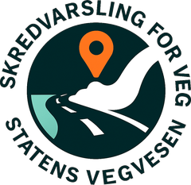

Stedsspesifikk skredvarsling – vakt
Tidsplan for vakta
Neste oppgave er uthevet ut fra klokka (norsk tid). Grå = ferdig i dag eller ikke aktuelt i dag.
Varslingsverktøy og wiki
Timeføring (merk med skredvarsling)
Morgenbrief
OBSObservert (seNorge, værstasjoner) – døgnet som slutter kl. 07:00PROGNOSEMET Locationforecast (MEPS) i løsneområdetVARSELVarsom og MET farevarsler
Henter morgenbriefen …